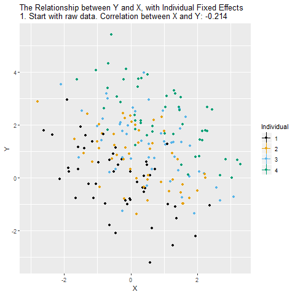

Chapter 2 Basic Observational Methods
This chapter contains four sections: the first two cover multiple regression and matching, respectively, which are two common ways of adjusting for observed variables. The third covers the sufficient adjustment set, which allows you to determine which variables should and should not be adjusted for to identify a causal effect. The fourth covers fixed effects, which is a method that allows you to adjust for some unmeasured confounding variables.
2.1 Multiple Regression

2.2 Matching

2.3 Sufficient Adjustment Set
2.4 Fixed Effects
